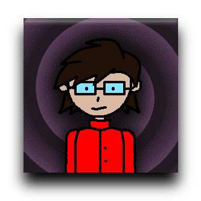
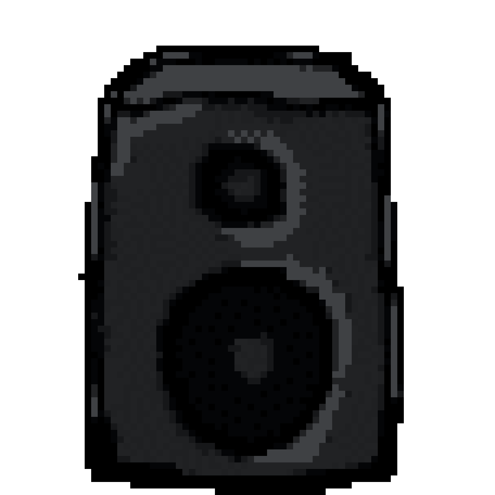

Vítejte na mém portfoliu ..no, mělo to být portfolio, ale více jsem se zaměřil na hudbu, dělal jsem tohle pro
školní projekt. Většinu času mi zabralo vytvořit kaskádové styly a grafiku. AI jsem nepoužíval pro editování
kódu/tvorbu kódu ani grafiku, takže vše co vidíte je má vlastní tvorba, to co jsem nevěděl jak udělat sám tak
jsem si jednoduše vyhledal :)
Na grafiku jsem použil program Paint.NET.
Na poskládání gifů z png obrázků jsem použil online nástroj který se
jmenuje Ezgif.
Zajímá mně grafický design, mám si rád hrát s designem. Rád i také občas kreslím menší obrázky jen tak z nudy. Z
části mně zajímá i kódování, už od malička jsem si zkoušel dělat malé interaktivní programy a hry hlavně ve Scratch a Bitsy, kódování je důvod proč jsem si tuhle školu i vybral :)
Mám také
rád celkově vzhled, zvuk a design internetu, digitálního prostředí 1980-2010, nemám rád ten typ minimalismu co
je dnes. Určitý typ minimalismu mně ale fascinuje, což je pixel art - to také patří ke starší době techniky.
Také se dostávám k hudbě, mám rád sice ostatní styly jako metal, techno, breakbeat, gabber a další, ale určitě
ten nejzajímavější je chiptune. Chiptune je žánr hudby co se snaží napodobit zvuk starých konzolí a zvukových
čipů, anebo v té době vznikl.
Sám si i svou hudbu skládám, je to totiž jedna ze zálib která mně nikdy
neopustila. Dokonce s chiptune jsem i začínal - je to totiž celkem primitivní zvuk který dokáže znít výborně. Já
nejčastěji používám programy Sunvox a PixiTracker. Hudbu jsem začal tvořit zhruba v 2024 s online programem zvaným BeepBox.

Chiptune je také známá pod názvy jako "8-bitová hudba" nebo "videoherní hudba", kvůli tomu že byla tvořena pro ranné videohry, často pro konzole s 8-bitovými procesory a kvůli velkým omezením se vyvinul tenhle zajímavý styl. Zde dám pár mých nejoblíbenějších příkladů, které vždy pouštím na ukázku :D
Karsten Koch - Aryx
Kenet & Rez - Unreal
Superhero 3
Magnus "Souleye" Pålsson -
Potential For Anything
"Elmobo" - Knulla
Kuk
"Lizardking" - Popcorn
Remix
"Asle/Lithium/ReDoX" - Ode
To Protracker
"Hoffman" - GET TO THE
CHOPPER!
Alexander "Nightradio"
Zolotov - 8bit Tales
Zde je můj účet na Bandcamp, zde mám
většinu své hudby. Skládání mi zabere většinou celkem dost času i moje skladby jsou většinou delší než obyčejné
3-4 minutové hity, i když občas starší nebo kratší skladba se tam objeví.
Zde je i moje nejnovější album -
Bandcamp má funkci kde mi dá předvolbu pro kód html, tak proč to nevyužít? :)
Validace: W3C Markup Validator